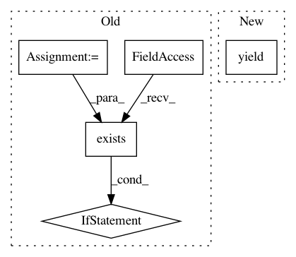

68b64f050901cb96e492b4346359ad0c078ac6c2,src/python/pants/backend/python/tasks2/pytest_run.py,PytestRun,_conftest,#PytestRun#Any#,367
Before Change
// These invariants ensure that we can restore the source chroot to its original state
// during post-test cleanup, and that even if that cleanup fails for some reason, the
// next test run will be able to restore the correct state.
conftest = os.path.join(
self.context.products.get_data(GatherSources.PYTHON_SOURCES).path(), "conftest.py")
conftest_orig = None
// Note that on the first test run since the source chroot was created both invariants hold
// here: 1 holds because haven"t ever created conftest_orig, and 2 holds trivially.
// See below for why both invariants hold here on subsequent runs that complete normally.
// Note that even if invariant 2 is violated here (say because the previous run crashed before
// executing the cleanup that restores it) it will be restored in this run"s cleanup.
if os.path.exists(conftest):
conftest_orig = "{}.orig".format(conftest)
if not os.path.exists(conftest_orig):
// Note that this preserves both invariants.
shutil.copy(conftest, conftest_orig)
with open(conftest_orig) as fp:
orig_conftest_content = fp.read()
conftest_content = orig_conftest_content + conftest_content
try:
// Temporarily violate invariant 2!
with open(conftest, "w") as fp:
fp.write(conftest_content)
After Change
conftest = os.path.join(conftest_dir, "conftest.py")
with open(conftest, "w") as fp:
fp.write(conftest_content)
yield conftest
@contextmanager
def _test_runner(self, targets, sources_map):
pex_info = PexInfo.default()
In pattern: SUPERPATTERN
Frequency: 3
Non-data size: 5
Instances
Project Name: pantsbuild/pants
Commit Name: 68b64f050901cb96e492b4346359ad0c078ac6c2
Time: 2017-04-21
Author: benjyw@gmail.com
File Name: src/python/pants/backend/python/tasks2/pytest_run.py
Class Name: PytestRun
Method Name: _conftest
Project Name: graphbrain/graphbrain
Commit Name: 30b3deb54d5420a55d138f176aee9fe857c02f4b
Time: 2020-08-19
Author: telmo@telmomenezes.net
File Name: graphbrain/agents/conjunctions.py
Class Name: Conjunctions
Method Name: input_edge
Project Name: okfn-brasil/serenata-de-amor
Commit Name: e0ef1b80b24143158803cebbc2f7c5927ed29192
Time: 2016-09-26
Author: cuducos@gmail.com
File Name: jarbas/core/management/commands/loaddatasets.py
Class Name: Command
Method Name: load_local